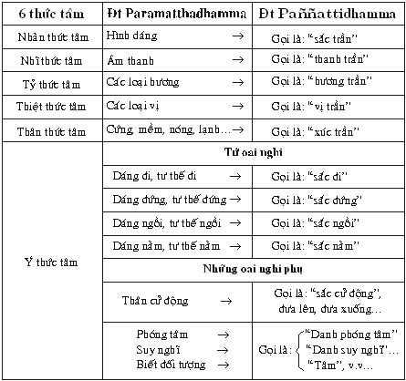

|
Tìm hiểu PHÁP HÀNH THIỀN TUỆ - Tỳ khưu HỘ PHÁP
PHẦN II PHÁP HÀNH (BHĀVANĀ) 4. ĐỐI TƯỢNG TỨ OAI NGHI Đối tượng tứ oai nghi (Iriyapathapabba) là một trong 14 đối tượng trong phần niệm thân. Đức Phật dạy trong kinh Đại Tứ niệm xứ, phần đối tượng tứ oai nghi rằng: [5] (Iriyāpathapabbaṃ niṭṭhitaṃ). Nghĩa: Sau khi thuyết giảng xong đối tượng "niệm hơi thở vô – hơi thở ra", Đức Thế Tôn dạy chư Tỳ khưu rằng: "Này chư Tỳ khưu, (hay hành giả), một đối tượng khác, Tỳ khưu: - Khi đang đi, có chánh niệm, trí tuệ tỉnh giác biết rõ rằng: "sắc đi". - Khi đang đứng, có chánh niệm, trí tuệ tỉnh giác biết rõ rằng: "sắc đứng". - Khi đang ngồi, có chánh niệm, trí tuệ tỉnh giác biết rõ rằng: "sắc ngồi". - Khi đang nằm, có chánh niệm, trí tuệ tỉnh giác biết rõ rằng: "sắc nằm". - Hoặc toàn thân của hành giả đang trong tư thế (dáng) như thế nào, hành giả nên có chánh niệm, trí tuệ tỉnh giác biết rõ toàn thân đang trong tư thế (dáng) như thế ấy…". - Như vậy, hành giả có chánh niệm, trí tuệ tỉnh giác thường theo dõi thấy rõ, biết rõ toàn thân trong thân của mình. - Hoặc, hành giả có chánh niệm, trí tuệ tỉnh giác thường theo dõi thấy rõ, biết rõ toàn thân trong thân của người khác. - Hoặc, hành giả có chánh niệm, trí tuệ tỉnh giác thường theo dõi thấy rõ, biết rõ khi thì toàn thân trong thân của mình, khi thì toàn thân trong toàn thân của người khác. - Hoặc, hành giả có chánh niệm, trí tuệ tỉnh giác thường theo dõi thấy rõ, biết rõ trạng thái sanh do nhân duyên nào sanh trong thân. - Hoặc, hành giả có chánh niệm, trí tuệ tỉnh giác thường theo dõi thấy rõ, biết rõ trạng thái diệt do nhân duyên ấy diệt trong thân. - Hoặc, hành giả có chánh niệm, trí tuệ tỉnh giác thấy rõ, biết rõ trạng thái sanh do nhân duyên nào sanh, thì trạng thái diệt do nhân duyên ấy diệt trong thân. Chánh niệm của hành giả trực nhận rằng: "chỉ là thân mà thôi", đối tượng hiện tại chỉ để phát triển chánh niệm, chỉ để phát triển trí tuệ tỉnh giác mà thôi. Hành giả không có tham ái và tà kiến nương nhờ (nơi đối tượng và chủ thể), không có chấp thủ nào (ta và của ta) trong ngũ uẩn này. Này chư Tỳ khưu (hay hành giả), như vậy gọi là Tỳ khưu có chánh niệm, trí tuệ tỉnh giác thường theo dõi trực nhận, trực giác thấy rõ biết rõ toàn thân trong thân. (Xong đối tượng 4 oai nghi). Đoạn kinh này có những động từ: * Gacchāmi: Theo nghĩa thường là "tôi đi", nhưng theo Chân nghĩa pháp là: "thân đi", hoặc "sắc đi". * Ṭhito’mhi: Theo nghĩa thường là: "tôi đứng", nhưng theo Chân nghĩa pháp là: "thân đứng", hoặc "sắc đứng". * Nisinno’mhi: Theo nghĩa thường là: "tôi ngồi", nhưng theo Chân nghĩa pháp là: "thân ngồi", hoặc "sắc ngồi". * Sayāno’mhi: Theo nghĩa thường là: "tôi nằm", nhưng theo Chân nghĩa pháp: "thân nằm", hoặc "sắc nằm". Nhận xét về "thân đi" hoặc "sắc đi" Thân dịch từ danh từ kāya. Kāya: thân có nghĩa là tổng hợp các phần lớn nhỏ lại với nhau, như 32 thể trược trong thân v.v…. Hay nói cách khác, kāya: thân là nơi tổng hợp 28 sắc pháp có tâm làm chủ. Thật ra, trong thân của mỗi người bình thường tổng hợp gồm có 27 sắc pháp. - Nếu là đàn ông trừ sắc nữ tính. - Nếu là đàn bà trừ sắc nam tính. Cho nên, gọi "thân đi" hoặc "sắc đi" chỉ khác nhau về danh từ, song giống nhau về ý nghĩa. Thân đứng hoặc sắc đứng, thân ngồi hoặc sắc ngồi, thân nằm hoặc sắc nằm cũng giải thích như thân đi. 4 oai nghi đi, đứng, ngồi, nằm thuộc về sắc pháp phát sanh từ tâm (cittajarūpa). Do đó, gọi là: "Sắc đi", "Sắc đứng", "Sắc ngồi", "Sắc nằm". Tâm có thể phát sanh tứ oai nghi chính: đi, đứng, ngồi, nằm và các oai nghi phụ khác, gồm có 32 tâm, đó là: 8 tham tâm + 2 sân tâm + 2 si tâm + 8 dục giới đại thiện tâm + 8 dục giới duy tác tâm + 1 tiếu sanh tâm + 1 ý môn hướng tâm + và đặc biệt có 2 thần thông tâm. Ví dụ: - Đi, đứng, ngồi, nằm sanh từ tham tâm, thì đi, đứng, ngồi, nằm… với dáng điệu khoan thai, nhẹ nhàng đáng yêu…. - Đi, đứng, ngồi, nằm sanh từ sân tâm, thì đi, đứng, ngồi, nằm… với dáng điệu nóng nảy, mạnh bạo…. - Đi, đứng, ngồi, nằm sanh từ si tâm, thì đi, đứng, ngồi, nằm… với dáng điệu ngơ ngẩn, thẩn thờ, phóng tâm…. - Đi, đứng, ngồi, nằm sanh từ dục giới đại thiện tâm không hợp trí tuệ, thì đi, đứng, ngồi, nằm… với dáng điệu, tư thế tự nhiên, có trí nhớ, nhưng không có trí tuệ biết rõ thực tánh của danh pháp, sắc pháp. - Đi, đứng, ngồi, nằm sanh từ dục giới đại thiện tâm hợp với trí tuệ, đối với hành giả tiến hành thiền tuệ thì đi, đứng, ngồi, nằm… với dáng điệu, tư thế tự nhiên, có trí nhớ, có trí tuệ có thể biết rõ thực tánh của danh pháp, sắc pháp. - Đi, đứng, ngồi, nằm sanh từ 8 dục giới đại duy tác tâm, tâm của bậc Thánh Arahán, thì đi, đứng, ngồi, nằm… với dáng điệu, tư thế tự nhiên, luôn luôn có trí nhớ, khi hợp trí tuệ, khi không hợp trí tuệ, tùy theo đối tượng. Đối Tượng Tứ Oai Nghi 4 oai nghi: oai nghi đi, oai nghi đứng, oai nghi ngồi, oai nghi nằm là những oai nghi bình thường tự nhiên của mỗi chúng sinh, Đức Phật dạy 4 oai nghi làm đối tượng trong phần niệm thân, bởi vì, đối tượng tứ oai nghi này là sắc pháp phát sanh từ tâm, có thể làm đối tượng của pháp hành thiền tuệ. Tứ oai nghi làm nơi nương nhờ của tà kiến Có số người không được gần gũi, thân cận với bậc Thiện trí trong Phật giáo, không được học hỏi, nghiên cứu về Chân nghĩa pháp, không hiểu biết về danh pháp, sắc pháp, là pháp vô ngã; cho nên số người ấy, mỗi khi đi, đứng, ngồi, nằm không diệt được chấp thủ về chúng sinh (sattūpaladdhiṃ na pajahati) và cũng không từ bỏ sự tưởng lầm cho là ta (attsaññā na ugghāṭeti: ngã tưởng); vì vậy, đối tượng đi, đứng, ngồi, nằm làm nơi nương nhờ cho tà kiến phát sanh thấy sai, chấp lầm rằng: - Khi thân đi hoặc sắc đi, thì tà kiến thấy sai, chấp lầm từ sắc đi cho là "ta đi". - Khi thân đứng hoặc sắc đứng, thì tà kiến thấy sai, chấp lầm từ sắc đứng cho là "ta đứng". - Khi thân ngồi hoặc sắc ngồi, thì tà kiến thấy sai, chấp lầm từ sắc ngồi cho là "ta ngồi". - Khi thân nằm hoặc sắc nằm, thì tà kiến thấy sai, chấp lầm từ sắc nằm cho là "ta nằm",…. Khi có sắc đi, thì tà kiến nương nhờ ở sắc đi để thấy sai, chấp lầm rằng: "ta đi". Thật ra, "ta đi" không có, mà chỉ có "sắc đi". Nhưng do tâm tà kiến thấy sai chấp lầm từ "sắc đi" cho là "ta đi". Khi tâm có tà kiến phát sanh, thì chắc chắn ắt phải có si tâm sở (vô minh) đồng sanh làm che án, bao trùm phủ kín thực tánh của danh pháp, sắc pháp ấy. Đúng theo thực tánh của danh pháp sắc pháp là pháp vô ngã, không có ngã. Vậy, ngã không có thật, thì chắc chắn không thể diệt ngã được. Sở dĩ có sự chấp ngã là do tà kiến thấy sai, chấp lầm từ danh pháp chấp là ngã (ta) và từ sắc pháp chấp là ngã (ta). Tâm tà kiến có thật, nên hành giả tiến hành thiền tuệ có thể diệt được tâm tà kiến ấy. Khi tâm tà kiến bị diệt bằng chánh kiến thấy đúng, biết đúng theo thực tánh của danh pháp sắc pháp là pháp vô ngã, thì sự chấp ngã không còn nữa. Tứ oai nghi làm nơi nương nhờ của chánh kiến Có số người thường gần gũi, thân cận với bậc Thiện trí trong Phật giáo, được học hỏi, nghiên cứu về Chân nghĩa pháp, hiểu biết rõ về danh pháp, sắc pháp, là pháp vô ngã. Họ có đức tin trong sạch nơi Tam bảo, có giới hạnh thanh tịnh, tiến hành thiền tuệ dùng 4 oai nghi làm đối tượng; cho nên mỗi khi đi, đứng, ngồi, nằm diệt được sự chấp thủ về chúng sinh (sattūpaladdhiṃ pajahati) và từ bỏ được sự tưởng lầm cho là ta (attasaññā ugghāṭeti: ngã tưỡng); vì vậy, đối tượng đi, đứng, ngồi, nằm làm nơi nương nhờ cho chánh kiến phát sanh thấy đúng, biết đúng rằng: - Khi thân đi hoặc sắc đi, thì chánh kiến thấy đúng, biết đúng từ oai nghi đi, dáng đi là "sắc đi". - Khi thân đứng hoặc sắc đứng, thì chánh kiến thấy đúng, biết đúng từ oai nghi đứng, dáng đứng là "sắc đứng". - Khi thân ngồi hoặc sắc ngồi, thì chánh kiến thấy đúng, biết đúng từ oai nghi ngồi, dáng ngồi là "sắc ngồi". - Khi thân nằm hoặc sắc nằm, thì chánh kiến thấy đúng, biết đúng từ oai nghi nằm, dáng nằm là "sắc nằm"…. Chánh kiến chính là trí tuệ. Tâm hợp với trí tuệ thiền tuệ là tâm sáng suốt thấy rõ, biết rõ đúng theo sự thật thực tánh của danh pháp, sắc pháp. Cho nên, tiến hành Tứ niệm xứ hay tiến hành thiền tuệ là cốt để trở lại thấy đúng, biết đúng theo thực tánh của danh pháp, sắc pháp là pháp vô ngã, không phải ta, không phải người, không phải đàn ông, không phải đàn bà, không phải chúng sinh nào, không phải vật này, vật kia… mà sự thật theo Chân nghĩa pháp là: - Danh pháp nào là danh pháp ấy. - Sắc pháp nào là sắc pháp ấy. Tứ oai nghi làm đối tượng thiền tuệ như thế nào? Đức Phật dạy trong kinh Đại Tứ niệm xứ, đối tượng "tứ oai nghi" là 1 trong 14 đối tượng trong phần niệm thân. 4 oai nghi: đi, đứng, ngồi, nằm là sắc pháp phát sanh từ tâm, gọi là cittajarūpa cũng thuộc về Chân nghĩa pháp (Paramatthadhamma). Thật vậy, trong Chú giải kinh Đại Tứ niệm xứ, về phần niệm thân, dạy rằng: "Paramatthato hi dhātūnaṃ yeva gamanaṃ, dhātūnaṃ ṭhānaṃ, dhātūnaṃ nisajjaṃ, dhātūnaṃ sayanaṃ". [7] Thật vậy, xét về chân nghĩa pháp, thì "oai nghi đi" chỉ là của tứ đại, "oai nghi đứng" chỉ là của tứ đại, "oai nghi ngồi" chỉ là của tứ đại, "oai nghi nằm" chỉ là của tứ đại mà thôi. Như vậy, tứ oai nghi đi, đứng, ngồi, nằm là sắc pháp phát sanh từ tâm, thuộc về sắc tứ đại, nên không thuộc về của người nào, của chúng sinh nào cả. Sắc tứ đại, có 4 sắc pháp là:
Sắc tứ đại này, là 4 sắc pháp căn bản chính, làm nền tảng cho 24 sắc pháp phụ thuộc phát sanh. Đối tượng 4 oai nghi: đi, đứng, ngồi, nằm.. là sắc toàn thân, không phải một phần nào của thân, mà trong thân của mỗi người bình thường có đầy đủ 27 sắc pháp, gồm sắc tứ đại và 23 sắc pháp phụ thuộc. Do đó, sắc đi, sắc đứng, sắc ngồi, sắc nằm thuộc sắc pháp là đối tượng của pháp hành thiền tuệ. I- Phần Lý Thuyết Pháp Học Tứ Oai Nghi Hành giả muốn tiến hành thiền tuệ, dùng tứ oai nghi làm đối tượng, trước tiên, hành giả cần phải học hỏi, nghiên cứu tìm hiểu sâu sắc bằng trí tuệ hiểu biết đúng đắn về 4 oai nghi: đi, đứng, ngồi, nằm là sắc pháp phát sanh từ tâm. Hành giả có trí tuệ sáng suốt hiểu biết đúng rằng:
Đó là sự hiểu biết theo chánh kiến thiền tuệ. 1- Thế nào gọi là sắc đi? Sắc đi, chính là dáng đi, tư thế đi, toàn thân di chuyển bước đi từng bước, một cách tự nhiên. Cho nên, sắc đi trong trạng thái động. Sắc đi thuộc về sắc pháp, làm đối tượng của thiền tuệ, đó là: dáng đi, tư thế đi. Có vô số dáng đi, tư thế đi gọi là sắc đi có vô số. 2- Thế nào gọi là sắc đứng? Sắc đứng, chính là dáng đứng, tư thế đứng, toàn thân đứng yên [8] không cử động, một cách tự nhiên. Cho nên, sắc đứng trong trạng thái tĩnh (hiện tại ngắn ngủi). Sắc đứng, thuộc về sắc pháp, làm đối tượng của thiền tuệ, đó là: dáng đứng, tư thế đứng. Có vô số dáng đứng, tư thế đứng, gọi là sắc đứng có vô số. 3- Thế nào gọi là sắc ngồi? Sắc ngồi, chính là dáng ngồi, tư thế ngồi, toàn thân ngồi yên không cử động, một cách tự nhiên; thân phần trên ngồi yên, thân phần dưới co theo dáng ngồi, theo tư thế ngồi; như ngồi xếp bằng, ngồi bán già, ngồi kiết già, ngồi trên ghế dựa, ngồi trên ghế salon,…. Cho nên, sắc ngồi trong trạng thái tĩnh (hiện tại ngắn ngủi). Sắc ngồi, thuộc về sắc pháp, làm đối tượng của thiền tuệ, đó là: dáng ngồi, tư thế ngồi. Có vô số dáng ngồi, tư thế ngồi, gọi là sắc ngồi có vô số. 4- Thế nào gọi là sắc nằm? Sắc nằm, chính là dáng nằm, tư thế nằm, toàn thân nằm yên không cử động, một cách tự nhiên, như nằm nghiêng, nằm ngửa,…. Cho nên, sắc nằm trong trạng thái tĩnh (hiện tại ngắn ngủi). Sắc nằm, thuộc về sắc pháp, làm đối tượng của thiền tuệ, đó là: dáng nằm, tư thế nằm. Có nhiều dáng nằm, tư thế nằm, gọi là sắc nằm có vô số. Hành giả nên hiểu biết đúng rằng: - Khi đi, không phải ta đi, cũng không phải ai đi, sự thật chỉ là "thân đi" hoặc "sắc đi". Đó là dáng đi, tư thế đi. - Khi đứng, không phải ta đứng, cũng không phải ai đứng, sự thật chỉ là "thân đứng" hoặc "sắc đứng". Đó là dáng đứng, tư thế đứng. - Khi ngồi, không phải ta ngồi, cũng không phải ai ngồi, sự thật chỉ là "thân ngồi" hoặc "sắc ngồi". Đó là dáng ngồi, tư thế ngồi. - Khi nằm, không phải ta nằm, cũng không phải ai nằm, sự thật chỉ là "thân nằm" hoặc "sắc nằm". Đó là dáng nằm, tư thế nằm. Nhân duyên phát sanh Danh pháp, sắc pháp phát sanh đều do nhân duyên. Danh pháp nào phát sanh, do nhân duyên của danh pháp ấy. Sắc pháp nào phát sanh, do nhân duyên của sắc pháp ấy. 4 oai nghi: đi, đứng, ngồi, nằm thuộc về sắc pháp phát sanh từ tâm gọi là sắc đi, sắc đứng, sắc ngồi, sắc nằm phát sanh đều do nhân duyên của chúng. Theo bộ Chú giải [9] của bài kinh Mahāsatipaṭṭhānasutta (kinh Đại Tứ niệm xứ) dạy rằng:
1- Nhân duyên nào phát sanh sắc đi? Sắc đi phát sanh từ tâm, qua quá trình diễn biến liên tục do nhiều nhân duyên như sau__
Do đó, gọi là "thân đi" hoặc "sắc đi" là sắc pháp phát sanh do tâm (cittajarūpa). 2- Nhân duyên nào phát sanh sắc đứng? Sắc đứng phát sanh từ tâm, qua quá trình diễn biến liên tục do nhiều nhân duyên như sau__ - Tâm nghĩ "đứng".
Do đó, gọi là "thân đứng" hoặc "sắc đứng", là sắc pháp phát sanh từ tâm. 3- Nhân duyên nào phát sanh sắc ngồi? Sắc ngồi phát sanh từ tâm, qua quá trình diễn biến liên tục do nhiều nhân duyên như sau__
Do đó, gọi là "thân ngồi" hoặc "sắc ngồi", là sắc pháp phát sanh từ tâm. 4- Nhân duyên nào phát sanh sắc nằm? Sắc nằm phát sanh từ tâm, qua quá trình diễn biến liên tục do nhiều nhân duyên như sau__
Do đó, gọi là "thân nằm" hoặc "sắc nằm", là sắc pháp phát sanh từ tâm. Nếu trường hợp thiếu một nhân duyên nào, thì sắc đi, sắc đứng, sắc ngồi, sắc nằm,… không thể phát sanh được. Ví dụ: Sở dĩ, người bị bại liệt, dầu tâm của họ muốn đi, muốn đứng, muốn ngồi, muốn nằm… trong tư thế này hay tư thế khác, cũng không thể đi, đứng, ngồi, nằm… theo ý muốn của mình, như người bình thường; là vì chất gió phát sanh từ tâm không đủ năng lực làm cho toàn thân cử động theo ý muốn của họ. Con người bình thường đi, đứng, ngồi, nằm,... cử động được dễ dàng là do nhờ năng lực của chất gió phát sanh từ tâm điều hòa được tứ đại (đất, nước, lửa, gió). Ví dụ: Oai nghi đi, hay "sắc đi".
Bởi vậy cho nên, sắc đi, sắc đứng, sắc ngồi, sắc nằm, co tay vào, co chân vào, duỗi tay ra, duỗi chân ra,… là công việc của tứ đại, do tâm chủ động, điều khiển. Đức Phật ví "thân" này như một chiếc xe; "tâm" này ví như người lái xe. Thật vậy, chiếc xe chạy mau, chạy chậm, quẹo trái, quẹo phải, ngừng lại,… đều do người lái xe điều khiển. Cũng như vậy, thân này đi, đứng, ngồi, nằm, bước tới, bước lui, quay bên phải, quay bên trái, co tay vào, co chân vào, duỗi tay ra, duỗi chân ra,… đều do tâm điều khiển, cho nên gọi là "sắc pháp phát sanh từ tâm" (cittajarūpa). Phân biệt đối tượng tứ oai nghi thuộc Paññatti - Paramattha 4 oai nghi: sắc đi, sắc đứng, sắc ngồi, sắc nằm là sắc pháp phát sanh từ tâm (cittajarūpa) thuộc paramattha (chân nghĩa pháp). Hành giả tiến hành thiền tuệ dùng tứ oai nghi làm đối tượng, điều trước hết là cần phải học hỏi, nghiên cứu rõ ràng về tứ oai nghi như thế nào thuộc về đối tượng Paramattha (Chân nghĩa pháp), và như thế nào thuộc về đối tượng Paññatti (Chế định pháp); điều này tối quan trọng, bởi vì mỗi đối tượng sẽ dẫn đến mỗi kết quả hoàn toàn khác nhau. Tứ oai nghi thuộc về Paññatti: Chế định pháp Chế định pháp là pháp mà con người đặt ra do căn cứ nơi chân nghĩa pháp, có quy ước với nhau theo mỗi nhóm người, mỗi dân tộc được lưu truyền từ thế hệ trước cho đến thế hệ sau nối tiếp nhau. Pháp chế định có 2 loại: 1- Atthapaññatti: Ý nghĩa, hình dạng chế định. Nếu hành giả tiến hành thiền tuệ có khái niệm về dáng đi, tư thế đi; dáng đứng, tư thế đứng; dáng ngồi, tư thế ngồi; dáng nằm, tư thế nằm là những hình dạng khái niệm trong tâm, thì những đối tượng ấy thuộc về atthapaññatti: ý nghĩa, hình dạng chế định. 2- Nāmapaññatti: Danh từ, ngôn ngữ chế định. Nếu hành giả tiến hành thiền tuệ căn cứ vào những khái niệm trong tâm:
Thì những đối tượng này thuộc về vijjānāmapaññatti: danh từ, ngôn ngữ chế định có thực tánh pháp làm nền tảng. Hành giả trong khi niệm tưởng trong tâm đến đối tượng sắc đi, sắc đứng… nào, thì tâm cũng có thể an trú ở đối tượng ấy như đối tượng của thiền định, mà không phải tiến hành thiền định, vì tứ oai nghi không có trong 40 đề mục thiền định; hơn nữa, sự tiến hành thiền định chỉ có một đề mục duy nhất làm đối tượng, nhưng ở đây mỗi lần thay đổi oai nghi là thay đổi đối tượng. Do đó, hành giả không phải tiến hành thiền định mà cũng không phải tiến hành thiền tuệ, bởi vì đối tượng tứ oai nghi ấy thuộc về Chế định pháp, sẽ dẫn đến kết quả như sau: - Không thể thấy rõ, biết rõ được thực tánh của danh pháp, sắc pháp. - Không thể thấy rõ, biết rõ trạng thái riêng của mỗi danh pháp, mỗi sắc pháp. - Không thể thấy rõ, biết rõ sự sanh, sự diệt của danh pháp, sắc pháp. - Không thể thấy rõ, biết rõ 3 trạng thái chung: trạng thái vô thường, trạng thái khổ, trạng thái vô ngã của danh pháp, sắc pháp.... Tứ oai nghi thuộc về Paramattha: Chân nghĩa pháp Chân nghĩa pháp là pháp không do con người chế định, pháp này có thực tánh hiện hữu một cách tự nhiên của chúng, nhưng không có một ai thấy rõ biết rõ đến chúng, bởi vì vô minh bao trùm phủ kín thực tánh pháp của chúng. Cho đến khi Đức Phật xuất hiện trên thế gian, Ngài đã diệt đoạn tuyệt được vô minh, cho nên sự thật chân nghĩa pháp hiển nhiên hiện rõ; rồi Ngài giảng dạy cho chúng sinh hiểu biết chân nghĩa pháp. 4 oai nghi thuộc về chân nghĩa pháp đó là:
Những dáng đi, tư thế đi… này là những trạng thái diễn biến của tứ đại phát sanh từ tâm gọi là cittajarūpa (sắc pháp sanh từ tâm), được thể hiện toàn thân, hoàn toàn không qua một khái niệm hoặc một danh từ ngôn ngữ nào, có thể diễn đạt được thực tánh của nó. Do đó, dáng đi, tư thế đi, dáng đứng, tư thế đứng… này thuộc về paramattha: chân nghĩa pháp. Nếu hành giả tiến hành thiền tuệ, có chánh niệm trực nhận, trí tuệ tỉnh giác trực giác trực tiếp ngay đối tượng paramattha của 4 oai nghi: "dáng đi, tư thế đi; dáng đứng, tư thế đứng; dáng ngồi, tư thế ngồi; dáng nằm, tư thế nằm", được thể hiện toàn thân, không qua khái niệm trong tâm và danh từ ngôn ngữ chế định, thì có thể dẫn đến kết quả như sau:
Như vậy, để tiến hành đúng theo pháp hành thiền tuệ, hành giả cần phải biết phân biệt rõ đối tượng thuộc paññatti và đối tượng thuộc paramattha, để mà biết chọn đúng đối tượng paramattha làm đối tượng của pháp hành thiền tuệ. Cho nên, đối với hành giả tiến hành thiền tuệ có 3 giai đoạn quan trọng: Giai đoạn đầu tiên: hành giả cần phải tìm hiểu, học hỏi để biết rõ tứ oai nghi thuộc đối tượng paññatti (chế định pháp) và tứ oai nghi thuộc đối tượng paramattha (chân nghĩa pháp). Giai đoạn giữa: khi hành giả tiến hành thiền tuệ có chánh niệm trực nhận, trí tuệ tỉnh giác trực giác trực tiếp ngay đối tượng paramattha dáng đi, tư thế đi; hoặc dáng đứng, tư thế đứng; hoặc dáng ngồi, tư thế ngồi; hoặc dáng nằm, tư thế nằm… được thể hiện toàn thân, hoàn toàn không phải khái niệm trong tâm, hoặc danh từ ngôn ngữ nào. Giai đoạn cuối: trí tuệ thiền tuệ thấy rõ, biết rõ thực tánh của danh pháp, sắc pháp; sự sanh, sự diệt, của danh pháp, sắc pháp; trạng thái vô thường, trạng thái khổ, trạng thái vô ngã của danh pháp, sắc pháp, dẫn đến sự chứng ngộ chân lý Tứ thánh đế, chứng đắc 4 Thánh Đạo, 4 Thánh Quả và Niết Bàn. II- Phần Thực Hành Đối Tượng Tứ Oai Nghi Tứ oai nghi là một trong 21 đối tượng của Tứ niệm xứ có khả năng dẫn đến sự chứng ngộ chân lý Tứ thánh đế, chứng đắc 4 Thánh Đạo, 4 Thánh Quả và Niết Bàn. Sau khi hiểu rõ phần lý thuyết pháp học của tứ oai nghi, hành giả muốn tiến hành thiền tuệ, cần phải có những điều kiện cần thiết như sau__ - Điều đầu tiên, hành giả cần phải tìm một vị Thiền sư thông thạo về pháp học, có đầy đủ kinh nghiệm về pháp hành thiền tuệ, để nương nhờ. Trực tiếp thụ giáo với vị Thiền sư ấy, theo một nghi lễ thọ pháp hành thiền tuệ trang nghiêm, tôn kính, để hộ trì cho hành giả được an toàn trong khi tiến hành thiền tuệ. Và trình pháp, là trình bày pháp hành của mình, khi mình chưa có khả năng nhận định được đúng hay sai; trình bày những cảm giác phát sanh trong khi tiến hành thiền tuệ, làm cho phát sanh tâm hoài nghi, làm cản trở việc tiến hành thiền tuệ. Hành giả nhờ vị thiền sư giảng giải cho hiểu rõ không còn hoài nghi, để tiếp tục pháp hành thiền tuệ đúng theo Pháp hành Trung đạo. - Hành giả phải là người có giới hạnh trong sạch để làm nền tảng cho định và tuệ phát sanh. Nếu giới không trong sạch, thì định và tuệ không có chỗ nương nhờ để phát sanh. Ví như không có đất, thì cây không có chỗ nương nhờ để sanh trưởng, thì còn mong gì đến hoa và quả. - Là người có đức tin trong sạch nơi Tam bảo, có chánh kiến đúng đắn, có sự tinh tấn liên tục không ngừng, vì sự giải thoát khổ do nhờ tinh tấn. Như Đức Phật dạy: "Vīriyena dukkhamacceti…". [10] "Chúng sinh giải thoát khổ do nhờ tinh tấn". - Phải có đủ những điều kiện thuận lợi cho sự tiến hành thiền tuệ được phát triển tốt. Hành giả muốn tiến hành thiền tuệ có 4 oai nghi: sắc đi, sắc đứng, sắc ngồi, sắc nằm… làm đối tượng, cần phải hiểu rõ phương pháp tiến hành thiền tuệ như sau__ 1- Sắc Đi 1- Đối tượng sắc đi: Đó chính là dáng đi, tư thế đi là sắc pháp phát sanh từ tâm, toàn thân di chuyển, bước đi từng bước. Dáng đi, tư thế đi phải tự nhiên, thanh thản, như đi tản bộ, không nên đi chậm quá, cũng không nên đi mau quá, làm mất dáng tự nhiên, làm che án thực tánh của nó. Thực tánh của các pháp luôn luôn trong trạng thái tự nhiên, nên dáng đi, tư thế đi làm đối tượng của thiền tuệ cũng phải tự nhiên. Sắc đi trong trạng thái động, thuộc về sắc pháp, dùng làm đối tượng để tiến hành thiền tuệ, đó chính là mỗi dáng đi, tư thế đi, toàn thân di chuyển, do bước đi từng bước, từng bước một cách tự nhiên. 2- Chủ thể: * Hành giả là người có chánh niệm (niệm thân) trực nhận đúng ngay đối tượng mỗi dáng đi, tư thế đi, theo dõi, ghi nhớ quá trình diễn biến mỗi dáng đi, tư thế đi, toàn thân di chuyển do bước đi từng bước, từng bước một cách tự nhiên…. Toàn thân di chuyển như thế nào? Ví dụ: Khi nhìn thấy chiếc xe chạy, là nhìn thấy toàn chiếc xe di chuyển, không phải nhìn thấy bánh xe lăn…. Cũng như vậy, hành giả có chánh niệm trực nhận ngay đối tượng theo dõi quá trình diễn biến mỗi dáng đi, tư thế đi, toàn thân di chuyển bước đi một cách tự nhiên. Hành giả không nên chú tâm ở một phần nào của thân như chân bước từng bước, không nên có khái niệm về dáng đi, tư thế đi trong tâm; và cũng không nên niệm tưởng trong tâm rằng: sắc đi… sắc đi… hoặc chân trái bước, chân mặt bước…. Bởi vì, khái niệm về dáng đi, tư thế đi, hoặc niệm tưởng sắc đi, chân trái bước, chân phải bước… trong tâm như vậy, thì đối tượng sắc đi… trở thành đối tượng paññatti: chế định pháp, không phải là đối tượng paramattha: chân nghĩa pháp. Cho nên, đối tượng ấy không phải là đối tượng của thiền tuệ. Theo Chân nghĩa pháp, thì đối tượng "sắc đi" đó chính là mỗi dáng đi, tư thế đi hiện rõ toàn thân di chuyển bước đi, đối tượng hiện tại sắc đi không ở trong tâm tưởng. Nếu hành giả niệm tưởng sắc đi trong tâm, thì sự trực nhận đối tượng sắc đi không đúng chỗ (vị trí), hành giả không thể nào thấy rõ, biết rõ thực tánh của đối tượng sắc đi ấy. Vì vậy, hành giả có chánh niệm trực nhận đúng ngay đối tượng mỗi dáng đi, tư thế đi toàn thân di chuyển từng bước, từng bước một cách tự nhiên. * Hành giả là người có trí tuệ tỉnh giác thấy rõ biết rõ mỗi dáng đi, tư thế đi toàn thân di chuyển bước đi ấy; mỗi dáng đi, tư thế đi, gọi là sắc đi; có vô số dáng đi, tư thế đi, nên sắc đi có vô số. Hành giả tiến hành thiền tuệ có trí tuệ tỉnh giác thấy rõ biết rõ dáng đi, tư thế đi gọi là sắc đi ấy đúng theo chánh kiến thiền tuệ, đồng thời có thể diệt được tà kiến theo chấp ngã tưởng lầm rằng: "ta đi" và các phiền não khác (diệt theo cách từng thời). Tóm lại, hành giả là người có chánh niệm, có trí tuệ tỉnh giác trực nhận, trực giác thấy rõ biết rõ mỗi dáng đi, tư thế đi toàn thân di chuyển bước đi như thế nào, thì thấy rõ biết rõ mỗi dáng đi, tư thế đi toàn thân di chuyển bước đi như thế ấy, một cách thoáng qua [11] (ví như chụp hình mỗi tư thế đi khác biệt nhau). * Hành giả là người có tâm tinh tấn hỗ trợ cho chánh niệm, trí tuệ tỉnh giác, tiến hành thiền tuệ liên tục không ngừng, để cho trí tuệ thiền tuệ được phát triển, chánh kiến thiền tuệ càng thấy rõ sắc đi, thì đồng thời tà kiến theo chấp ngã tưởng lầm "ta đi" bị lu mờ dần, cho đến khi tà kiến theo chấp ngã bị tiêu diệt hẳn, do năng lực của trí tuệ thiền tuệ. Trên đây phân tách 3 loại tâm sở: niệm tâm sở là chánh niệm; trí tuệ tâm sở: trí tuệ tỉnh giác là chánh kiến; tinh tấn tâm sở là chánh tinh tấn với 3 phận sự khác nhau, cùng với các thiện tâm sở khác, đồng sanh trong một dục giới đại thiện tâm, có chung một đối tượng thiền tuệ. Song mỗi tâm sở có phận sự riêng, đồng thời, không trước, không sau. 2- Sắc Đứng 1- Đối tượng sắc đứng: Đó chính là mỗi dáng đứng, tư thế đứng, là sắc pháp phát sanh từ tâm, toàn thân đứng yên không cử động. Dáng đứng, tư thế đứng phải tự nhiên, không nên đứng kiểu này kiểu nọ, cũng không nên đứng trân người, làm mất dáng tự nhiên, làm che án thực tánh của nó. Thực tánh của các pháp luôn luôn trong trạng thái tự nhiên, nên dáng đứng, tư thế đứng làm đối tượng của thiền tuệ cũng phải tự nhiên. Sắc đứng trong trạng thái tĩnh [12], thuộc về sắc pháp, dùng làm đối tượng để tiến hành thiền tuệ, đó chính là mỗi dáng đứng, tư thế đứng toàn thân đứng yên không cử động (đối tượng hiện tại ngắn ngủi, nếu thân cử động, thì không còn dáng đứng, tư thế đứng). 2- Chủ thể: * Hành giả là người có chánh niệm (niệm thân) trực nhận đúng ngay đối tượng mỗi dáng đứng, tư thế đứng toàn thân đứng yên không cử động, theo dõi, ghi nhớ mỗi dáng đứng, tư thế đứng tự nhiên toàn thân đứng yên không cử động, đối tượng hiện tại ấy. Hành giả không nên chú tâm ở một phần nào của thân; không nên có khái niệm về dáng đứng, tư thế đứng trong tâm, và cũng không nên niệm tưởng trong tâm rằng: sắc đứng,… sắc đứng,… hoặc đứng à,… đứng à…. Bởi vì, khái niệm về dáng đứng, tư thế đứng; niệm tưởng sắc đứng trong tâm như vậy, thì đối tượng sắc đứng trở thành đối tượng chế định pháp, không phải chân nghĩa pháp. Cho nên, đối tượng ấy không phải là đối tượng của thiền tuệ. Theo Chân nghĩa pháp, thì đối tượng sắc đứng chính là mỗi dáng đứng, tư thế đứng tự nhiên hiện rõ toàn thân đứng yên không cử động, đối tượng hiện tại của sắc đứng không ở trong tâm tưởng. Nếu hành giả niệm tưởng sắc đứng trong tâm, thì sự trực nhận đối tượng sắc đứng không đúng chỗ (vị trí), hành giả không thể nào thấy rõ, biết rõ thực tánh của đối tượng sắc đứng ấy. Vì vậy, hành giả có chánh niệm trực nhận đúng ngay đối tượng mỗi dáng đứng, tư thế đứng toàn thân đứng yên, không cử động một cách tự nhiên. * Hành giả là người có trí tuệ tỉnh giác thấy rõ, biết rõ mỗi dáng đứng, tư thế đứng toàn thân đứng yên ấy, mỗi dáng đứng tư thế đứng gọi là "sắc đứng" có vô số dáng đứng, tư thế đứng, nên sắc đứng có vô số. Hành giả tiến hành thiền tuệ, có trí tuệ tỉnh giác thấy rõ biết rõ dáng đứng, tư thế đứng gọi là sắc đứng ấy đúng theo chánh kiến thiền tuệ, đồng thời có thể diệt được tà kiến theo chấp ngã tưởng lầm rằng "ta đứng" và các phiền não khác (diệt theo cách từng thời). Tóm lại, hành giả là người có chánh niệm, trí tuệ tỉnh giác trực nhận, trực giác thấy rõ biết rõ mỗi dáng đứng, tư thế đứng toàn thân như thế nào, thì thấy rõ biết rõ mỗi dáng đứng, tư thế đứng toàn thân như thế ấy, một cách thoáng qua (ví như chụp hình mỗi tư thế đứng khác biệt nhau). * Hành giả là người có tâm tinh tấn hỗ trợ cho chánh niệm, trí tuệ tỉnh giác tiến hành thiền tuệ liên tục không ngừng, để cho trí tuệ thiền tuệ được phát triển, chánh kiến thiền tuệ càng thấy rõ sắc đứng, thì đồng thời tà kiến theo chấp ngã tưởng lầm "ta đứng" bị lu mờ dần, cho đến khi tà kiến theo chấp ngã bị tiêu diệt hẳn, do năng lực của trí tuệ thiền tuệ. 3- Sắc Ngồi 1- Đối tượng sắc ngồi: Đó chính là mỗi dáng ngồi, tư thế ngồi, là sắc pháp phát sanh từ tâm, toàn thân ngồi yên không cử động, thân phần trên ngồi thẳng, thân phần dưới co theo mỗi tư thế ngồi. Dáng ngồi, tư thế ngồi phải tự nhiên, không nên ngồi kiểu này, kiểu kia, làm mất dáng tự nhiên, làm che án thực tánh của nó. Thực tánh của các pháp luôn luôn trong trạng thái tự nhiên, nên dáng ngồi, tư thế ngồi làm đối tượng của thiền tuệ cũng phải tự nhiên. Sắc ngồi trong trạng thái tĩnh [13] , thuộc về sắc pháp, dùng làm đối tượng để tiến hành thiền tuệ, đó chính là mỗi dáng ngồi, tư thế ngồi toàn thân ngồi yên không cử động (đối tượng hiện tại rất ngắn ngủi, nếu thân cử động, thì không còn dáng ngồi, tư thế ngồi). 2- Chủ thể: * Hành giả là người có chánh niệm (niệm thân) trực nhận đúng ngay đối tượng mỗi dáng ngồi, tư thế ngồi toàn thân ngồi yên không cử động [14], theo dõi ghi nhớ mỗi dáng ngồi, tư thế ngồi toàn thân, ngồi yên2 không cử động ấy. Hành giả không nên chú tâm ở một phần nào của thân; không nên có khái niệm về dáng ngồi, tư thế ngồi trong tâm, và cũng không nên niệm tưởng trong tâm rằng: sắc ngồi,… sắc ngồi,… hoặc ngồi à,… ngồi à…. Bởi vì, khái niệm về dáng ngồi, tư thế ngồi; niệm tưởng sắc ngồi trong tâm như vậy, thì đối tượng sắc ngồi trở thành đối tượng chế định pháp, không phải chân nghĩa pháp. Cho nên, đối tượng ấy không phải là đối tượng của thiền tuệ. Theo Chân nghĩa pháp, thì đối tượng sắc ngồi chính là mỗi dáng ngồi, tư thế ngồi tự nhiên hiện rõ toàn thân ngồi yên, đối tượng hiện tại của sắc ngồi không ở trong tâm tưởng. Nếu hành giả niệm tưởng sắc ngồi trong tâm, thì sự trực nhận đối tượng sắc ngồi không đúng chỗ (vị trí), hành giả không thể nào thấy rõ, biết rõ thực tánh của đối tượng sắc ngồi ấy. Vì vậy, hành giả có chánh niệm trực nhận đúng ngay đối tượng mỗi dáng ngồi, tư thế ngồi toàn thân ngồi yên, không cử động một cách tự nhiên. * Hành giả là người có trí tuệ tỉnh giác thấy rõ, biết rõ mỗi dáng ngồi, tư thế ngồi toàn thân ngồi yên ấy, mỗi dáng ngồi, tư thế ngồi gọi là "sắc ngồi" có vô số dáng ngồi, tư thế ngồi, nên sắc ngồi có vô số. Hành giả tiến hành thiền tuệ, có trí tuệ tỉnh giác thấy rõ biết rõ dáng ngồi, tư thế ngồi gọi là sắc ngồi ấy đúng theo chánh kiến thiền tuệ, đồng thời có thể diệt được tà kiến theo chấp ngã tưởng lầm rằng "ta ngồi" và các phiền não khác (diệt theo cách từng thời). Tóm lại, hành giả là người có chánh niệm, trí tuệ tỉnh giác trực nhận, trực giác thấy rõ biết rõ mỗi dáng ngồi, tư thế ngồi toàn thân như thế nào, thì thấy rõ biết rõ mỗi dáng ngồi, tư thế ngồi toàn thân như thế ấy, một cách thoáng qua (ví như chụp hình mỗi tư thế ngồi khác biệt nhau). * Hành giả là người có tâm tinh tấn hỗ trợ cho chánh niệm, trí tuệ tỉnh giác tiến hành thiền tuệ liên tục không ngừng, để cho trí tuệ thiền tuệ được phát triển, chánh kiến thiền tuệ càng thấy rõ sắc ngồi, thì đồng thời tà kiến theo chấp ngã tưởng lầm "ta ngồi" bị lu mờ dần, cho đến khi tà kiến theo chấp ngã bị tiêu diệt hẳn, do năng lực của trí tuệ thiền tuệ. 4- Sắc Nằm 1- Đối tượng sắc nằm: Đó chính là mỗi dáng nằm, tư thế nằm, là sắc pháp phát sanh từ tâm, toàn thân nằm yên không cử động theo mỗi tư thế nằm. Dáng nằm, tư thế nằm phải tự nhiên, không nên nằm kiểu này, kiểu kia, làm mất dáng tự nhiên, làm che án thực tánh của nó. Thực tánh của các pháp luôn luôn trong trạng thái tự nhiên, nên dáng nằm, tư thế nằm làm đối tượng của thiền tuệ cũng phải tự nhiên. Sắc nằm trong trạng thái tĩnh [15] , thuộc về sắc pháp, dùng làm đối tượng để tiến hành thiền tuệ, đó chính là mỗi dáng nằm, tư thế nằm toàn thân nằm yên không cử động (đối tượng hiện tại rất ngắn ngủi, nếu thân cử động, thì không còn dáng nằm, tư thế nằm). 2- Chủ thể: * Hành giả là người có chánh niệm (niệm thân) trực nhận đúng ngay đối tượng mỗi dáng nằm, tư thế nằm toàn thân nằm yên không cử động, theo dõi, ghi nhớ mỗi dáng nằm, tư thế nằm toàn thân nằm yên không cử động ấy. Hành giả không nên chú tâm ở một phần nào của thân; không nên có khái niệm về dáng nằm, tư thế nằm trong tâm, và cũng không nên niệm tưởng trong tâm rằng: sắc nằm,… sắc nằm,… hoặc nằm à,… nằm à…. Bởi vì, khái niệm về dáng nằm, tư thế nằm; niệm tưởng sắc nằm trong tâm như vậy, thì đối tượng sắc nằm trở thành đối tượng chế định pháp, không phải chân nghĩa pháp. Cho nên, đối tượng ấy không phải là đối tượng của thiền tuệ. Theo Chân nghĩa pháp, thì đối tượng sắc nằm chính là mỗi dáng nằm, tư thế nằm hiện rõ toàn thân nằm yên không cử động, đối tượng hiện tại của sắc nằm không ở trong tâm tưởng. Nếu hành giả niệm tưởng sắc nằm trong tâm, thì sự trực nhận đối tượng sắc nằm không đúng chỗ (vị trí), hành giả không thể nào thấy rõ, biết rõ thực tánh của đối tượng sắc nằm ấy. Vì vậy, hành giả có chánh niệm trực nhận đúng ngay đối tượng, là theo dõi mỗi dáng nằm, tư thế nằm toàn thân nằm yên, không cử động một cách tự nhiên. * Hành giả là người có trí tuệ tỉnh giác thấy rõ, biết rõ mỗi dáng nằm, tư thế nằm toàn thân nằm yên ấy, mỗi dáng nằm, tư thế nằm gọi là "sắc nằm" có vô số dáng nằm, tư thế nằm, nên sắc nằm có vô số. Hành giả tiến hành thiền tuệ, có trí tuệ tỉnh giác thấy rõ biết rõ dáng nằm, tư thế nằm gọi là sắc nằm ấy đúng theo chánh kiến thiền tuệ, đồng thời có thể diệt được tà kiến theo chấp ngã tưởng lầm rằng "ta nằm" và các phiền não khác (diệt theo cách từng thời). Tóm lại, hành giả là người có chánh niệm, trí tuệ tỉnh giác trực nhận, trực giác thấy rõ biết rõ mỗi dáng nằm, tư thế nằm toàn thân như thế nào, thì thấy rõ biết rõ mỗi dáng nằm, tư thế nằm toàn thân như thế ấy, một cách thoáng qua (ví như chụp hình mỗi tư thế nằm khác biệt nhau). * Hành giả là người có tâm tinh tấn hỗ trợ cho chánh niệm, trí tuệ tỉnh giác tiến hành thiền tuệ liên tục không ngừng, để cho trí tuệ thiền tuệ được phát triển, chánh kiến thiền tuệ thấy rõ sắc nằm, thì đồng thời tà kiến theo chấp ngã tưởng lầm "ta nằm" bị lu mờ dần, cho đến khi tà kiến theo chấp ngã bị tiêu diệt hẳn, do năng lực của trí tuệ thiền tuệ. Oai nghi chính – oai nghi phụ Oai nghi chính luôn luôn cần có những oai nghi phụ hỗ trợ, như trường hợp thay đổi từ oai nghi cũ sang oai nghi mới, cần phải có những oai nghi phụ hỗ trợ để hoàn thành oai nghi mới. Ngoài ra, các oai nghi phụ phát sanh như đưa tay gải, cử động..., những trường hợp ấy, oai nghi chính không còn hiện hữu. Khi ấy, hành giả nên có chánh niệm, trí tuệ tỉnh giác trực nhận, trực giác ngay các oai nghi phụ ấy, cũng là sắc pháp phát sanh từ tâm. Khi các oai nghi phụ xong phận sự, hành giả trở lại đối tượng oai nghi chính ngay, để cho sự tiến hành thiền tuệ liên tục, không bị gián đoạn. Khi hành giả có chánh niệm, trí tuệ tỉnh giác thấy rõ biết rõ, phân biệt rõ được sắc pháp - danh pháp hiện rõ trong mỗi oai nghi chính, mỗi oai nghi phụ thuộc sắc pháp. Nếu trường hợp có danh pháp nào phát sanh, thì chánh niệm, trí tuệ tỉnh giác cũng thấy rõ biết rõ danh pháp ấy như: - Khi nhãn thức tâm nhìn thấy sắc trần: hình dáng, hành giả nên có chánh niệm, trí tuệ tỉnh giác trực nhận, trực giác ngay: "danh thấy" (không phải ta thấy). [16] - Khi nhĩ thức tâm nghe thanh trần: các âm thanh, hành giả nên có chánh niệm, trí tuệ tỉnh giác trực nhận, trực giác ngay: "danh nghe" (không phải ta nghe). [16] - Khi tỷ thức tâm ngửi hương trần: các loại mùi, hành giả nên có chánh niệm, trí tuệ tỉnh giác trực nhận, trực giác ngay: "danh ngửi" (không phải ta ngửi). [16] - Khi thiệt thức tâm nếm vị trần: các loại vị, hành giả nên có chánh niệm, trí tuệ tỉnh giác trực nhận, trực giác ngay: "danh nếm" (không phải ta nếm). [16] - Khi thân thức tâm tiếp với xúc trần: cứng, mềm, nóng, lạnh,… hành giả nên có chánh niệm, trí tuệ tỉnh giác trực nhận, trực giác ngay: "danh tiếp xúc" (không phải ta tiếp xúc). [16] - Khi ý thức tâm phóng tâm về chuyện này, chuyện kia phát sanh, hành giả nên có chánh niệm, trí tuệ tỉnh giác trực nhận, trực giác ngay: "danh phóng tâm" (không phải ta phóng tâm, không nên quan tâm đến chuyện ấy). - Khi ý thức tâm xao lãng việc tiến hành thiền tuệ, suy nghĩ vấn đề khác, hành giả nên có chánh niệm, trí tuệ tỉnh giác trực nhận, trực giác ngay: "danh suy nghĩ" (không phải ta suy nghĩ, không nên suy nghĩ đến vấn đề ấy)…. Những trường hợp trên là nguyên nhân buông bỏ oai nghi chính, hành giả nên có chánh niệm, trí tuệ tỉnh giác trực nhận, trực giác thấy rõ, biết rõ danh pháp ấy xong; hành giả trở lại ngay đối tượng oai nghi chính, để cho sự tiến hành thiền tuệ được liên tục không bị gián đoạn. Ngoài 4 oai nghi chính: sắc đi, sắc đứng, sắc ngồi, sắc nằm ra, còn có vô số oai nghi phụ thuộc sắc pháp phát sanh từ tâm, và các danh pháp cũng đều có thể là đối tượng thiền tuệ, vì có thực tánh của sắc pháp, danh pháp; có sự sanh, sự diệt của sắc pháp, danh pháp; có ba trạng thái chung: trạng thái vô thường, trạng thái khổ, trạng thái vô ngã của sắc pháp, danh pháp. Như vậy, hành giả tiến hành thiền tuệ không nên xem trọng danh pháp, sắc pháp này, xem khinh danh pháp, sắc pháp kia, đặt thiện tâm trung dung trong mọi đối tượng sắc pháp danh pháp, để cho sự tiến hành thiền tuệ đúng theo Pháp hành Trung đạo, dẫn đến thấy rõ, biết rõ thực tánh của danh pháp, sắc pháp; thấy rõ sự sanh, sự diệt của danh pháp, sắc pháp; có thể thấy rõ trạng thái chung: trạng thái vô thường, trạng thái khổ, trạng thái vô ngã của danh pháp, sắc pháp; dẫn đến sự chứng ngộ chân lý Tứ thánh đế, chứng đắc 4 Thánh Đạo, 4 Thánh Quả và Niết Bàn. Nguyên nhân không biết đối tượng chân nghĩa pháp Thực tánh của danh pháp sắc pháp là có thật, là một sự thật hiển nhiên, đó là 6 đối tượng: sắc trần, thanh trần, hương trần, vị trần, xúc trần và pháp trần (trừ chế định pháp) luôn luôn hiện rõ trong 6 lộ trình tâm: nhãn môn lộ trình tâm, nhĩ môn lộ trình tâm, tỷ môn lộ trình tâm, thiệt môn lộ trình tâm, thân môn lộ trình tâm và ý môn lộ trình tâm tuỳ theo mỗi đối tượng tương ứng với môn của chúng. Nhưng thực tế trong cuộc sống, đối với hàng phàm nhân, không phải là hành giả đang tiến hành thiền tuệ, thường không thấy, không biết đến thực tánh của danh pháp sắc pháp thuộc chân nghĩa pháp, mà thường chỉ thấy, chỉ biết đến chế định pháp theo khái niệm ý nghĩa, hình dạng chế định trong tâm và danh từ ngôn ngữ chế định gọi tên như: con người, đàn ông, đàn bà, chúng sinh, vật này, vật kia v.v…… Bởi do nguyên nhân nào không thấy, không biết thực tánh của danh pháp sắc pháp đúng theo chân nghĩa pháp; mà thường chỉ thấy, chỉ biết đến chế định pháp, theo khái niệm ý nghĩa chế định, danh từ ngôn ngữ chế định? Sở dĩ, chúng ta không biết được thực tánh của danh pháp sắc pháp thuộc chân nghĩa pháp; là vì, những đối tượng danh pháp, sắc pháp hiện tại hiện ra và tồn tại (trụ) thời gian quá ngắn ngủi. Hơn nữa, mỗi sát na tâm biết đối tượng sanh rồi diệt lại càng quá mau lẹ (chỉ một lần búng đầu móng tay, tâm sanh diệt liên tục trải qua 1.000 tỷ lần) qua các lộ trình tâm quá mau lẹ theo định luật tự nhiên của chúng. Cho nên, đối tượng danh pháp sắc pháp thuộc chân nghĩa pháp vừa hiện rõ trong lộ trình tâm này, liền chuyển sang ý môn lộ trình tâm khác, trở thành đối tượng chế định pháp. Tuy nhiên, nguyên nhân chính làm cho chúng ta không thấy không biết được thực tánh của danh pháp, sắc pháp đúng theo chân nghĩa pháp, đó là do vô minh bao trùm phủ kín trên đối tượng danh pháp sắc pháp ấy. Theo thói quen của tâm thường biết đến đối tượng chế định pháp, theo khái niệm ý nghĩa chế định, danh từ ngôn ngữ chế định gọi tên khái niệm ý nghĩa ấy. Do đó, tâm không thể biết được thực tánh của danh pháp sắc pháp đúng theo chân nghĩa pháp. Bí quyết pháp hành thiền tuệ Để biết thực tánh của danh pháp, sắc pháp đúng theo chân nghĩa pháp (paramatthadhamma), hành giả tiến hành thiền tuệ cần phải biết bí quyết pháp hành thiền tuệ là "tâm chỉ cần biết thoáng qua". Tâm đó là đại thiện tâm có chánh niệm trực nhận đối tượng danh pháp hoặc sắc pháp nào, trí tuệ tỉnh giác trực giác chỉ cần biết thoáng qua đối tượng danh pháp hoặc sắc pháp ấy mà thôi. Tại sao tâm chỉ cần biết thoáng qua? Bởi vì, đối tượng danh pháp, sắc pháp hiện tại của chân nghĩa pháp (paramatthadhamma) hiện rõ trên ý môn lộ trình tâm vô cùng mau lẹ; cho nên, thiện tâm có chánh niệm trực nhận đối tượng danh pháp hoặc sắc pháp nào, trí tuệ tỉnh giác trực giác thấy rõ biết rõ ngay đối tượng danh pháp hoặc sắc pháp ấy chỉ cần biết thoáng qua mà thôi; thì đối tượng danh pháp hoặc sắc pháp ấy vẫn còn trong lãnh vực thuộc chân nghĩa pháp. Nếu hành giả chú tâm lâu nơi đối tượng, thì đối tượng ấy vượt qua khỏi lãnh vực của đối tượng chân nghĩa pháp, chuyển sang đối tượng chế định pháp, không phải là đối tượng của pháp hành thiền tuệ. Vả lại, pháp hành thiền tuệ chỉ cần khaṇikasamādhi (sát na định) định tâm trên đối tượng danh pháp hoặc sắc pháp hiện tại trong khoảnh khắc rất ngắn ngủi; khác với pháp hành thiền định phải có upacārasamādhi: cận định và appanāsamādhi: an định trên một đối tượng duy nhất, để có thể chứng đắc các bậc thiền sắc giới, thiền vô sắc giới. Trong tiểu sử Ngài Đại Đức Ānanda (bậc Thánh Nhập Lưu) chứng đắc từ Nhất Lai Thánh Đạo - Nhất Lai Thánh Quả, Bất Lai Thánh Đạo - Bất Lai Thánh Quả, Arahán Thánh Đạo - Arahán Thánh Quả cùng với thần thông trong khoảng thời gian thay đổi oai nghi ngồi sang oai nghi nằm, mà đầu chưa đụng gối. Như vậy, Ngài chứng đắc 3 Thánh Đạo - 3 Thánh Quả bậc cao không trong oai nghi chính nào, chỉ trong oai nghi phụ mà thôi. Cho nên, oai nghi chính - oai nghi phụ đều là đối tượng của pháp hành thiền tuệ, có khả năng dẫn đến sự chứng ngộ chân lý Tứ thánh đế, chứng đắc Thánh Đạo, Thánh Quả và Niết Bàn. Bảng phân biệt đối tượng  Vai Trò Của Đối Tượng Và Chủ Thể 1- Vai trò đối tượng: Đó là 4 oai nghi chính: sắc đi, sắc đứng, sắc ngồi, sắc nằm thuộc về sắc pháp phát sanh từ tâm, xem như vai trò chính. Ngoài tứ oai nghi chính ra, còn có vô số oai nghi phụ cử động của thân như: thay đổi từ oai nghi cũ này sang oai nghi mới khác, cần phải nhờ đến nhiều oai nghi phụ hỗ trợ, để có thể hoàn thành oai nghi mới; và có những oai nghi phụ cử động riêng rẽ như: đưa tay lên gãi ngứa, để tay xuống, duỗi chân ra, co chân vào,…. Tất cả những oai nghi phụ này, cũng là sắc pháp phát sanh từ tâm, xem như vai trò phụ. Tứ oai nghi chính và tất cả oai nghi phụ có giá trị tương đương nhau, cũng đều có thể làm đối tượng của thiền tuệ. Ngoài sắc pháp ra, còn những danh pháp là tham tâm, sân tâm, si tâm, phóng tâm… cũng đều là đối tượng của thiền tuệ, xem như vai trò phụ. Tất cả mọi sắc pháp, tất cả mọi danh pháp đều có giá trị tương đương; có thực tánh của mỗi sắc pháp, mỗi danh pháp phát sanh lên làm phận sự xong rồi đều phải diệt một cách tự nhiên; có 3 trạng thái chung: trạng thái vô thường, trạng thái khổ, trạng thái vô ngã; đều dẫn đến sự chứng ngộ chân lý Tứ thánh đế, chứng đắc 4 Thánh Đạo, 4 Thánh Quả, và Niết Bàn, như nhau cả thảy. Tất cả mọi sắc pháp, mọi danh pháp đều là đối tượng của thiền tuệ, ví như những vai diễn trung thực trong một bộ phim, hay một vở tuồng. 2- Vai trò chủ thể: Đó là chánh niệm trực nhận nơi đối tượng dáng đi, tư thế đi, hoặc dáng đứng, tư thế đứng, hoặc dáng ngồi, tư thế ngồi, hoặc dáng nằm, tư thế nằm, gọi là tứ oai nghi chính; và trí tuệ tỉnh giác trực giác nơi đối tượng (mà chánh niệm trực nhận) thấy rõ biết rõ dáng đi, tư thế đi gọi là "sắc đi" hoặc dáng đứng, tư thế đứng gọi là "sắc đứng"; hoặc dáng ngồi, tư thế ngồi gọi là "sắc ngồi"; hoặc dáng nằm, tư thế nằm gọi là "sắc nằm", đúng theo thực tánh của sắc pháp ấy, để diệt tà kiến thấy sai chấp lầm cho là ta. Ngoài ra, chánh niệm trực nhận, trí tuệ tỉnh giác trực giác mọi sự cử động của thân gọi là oai nghi phụ. 4 oai nghi chính, và các oai nghi phụ, đều thuộc về sắc pháp phát sanh từ tâm. Và chánh niệm trực nhạn, trí tuệ tỉnh giác trực giác trạng thái các tâm, tâm strong tam giới, gọi là danh pháp. Các đối tượng dầu là sắc pháp hay danh pháp cũng đều có giá trị tương đương như nhau; nghĩa là có thực tánh của mỗi danh pháp, mỗi sắc pháp; có sự sanh, sự diệt của danh pháp, sắc pháp; có 3 trạng thái chung: trạng thái vô thường, trạng thái khổ, trạng thái vô ngã của danh pháp, sắc pháp, đều có thể dẫn đến sự chứng ngộ sự thật chân lý Tứ thánh đế, chứng đắc 4 Thánh Đạo, 4 Thánh Quả, và Niết Bàn, như nhau cả thảy. Cho nên, hành giả không nên xem trọng một sắc pháp, một danh pháp nào, cũng không nên xem khinh một sắc pháp, một danh pháp nào; để tránh mắc phải 2 cực đoan thuộc 2 biên kiến, để cho sự tiến hành thiền tuệ đúng theo Pháp hành Trung đạo. Vậy, vai trò hành giả có chánh niệm trực nhận, trí tuệ tỉnh giác trực giác thấy rõ biết rõ các danh pháp, sắc pháp là đối tượng của pháp hành thiền tuệ, ví như vai trò người khán giả xem các vai chính, vai phụ trong một bộ phim hay một vở tuồng mà thôi. Thật ra, đối tượng của pháp hành thiền tuệ đó là danh pháp, sắc pháp thuộc về Chân nghĩa pháp. Cho nên, không có danh từ ngôn ngữ chế định nào có thể diễn tả được thực tánh trung thực của danh pháp, sắc pháp; mà chỉ thực hành đúng theo pháp hành thiền tuệ, khi trí tuệ thiền tuệ phát sanh mới có thể thấy rõ biết rõ được thực tánh của danh pháp, sắc pháp mà thôi. Do đó, phần thực hành đối tượng tứ oai nghi: sắc đi, sắc đứng, sắc ngồi, sắc nằm, dầu giảng giải tỉ mỉ như thế nào đi nữa, cũng không thể nào diễn tả được thực tánh trung thực của sắc pháp, danh pháp đối tượng của thiền tuệ. Về pháp hành thiền tuệ, hành giả tự học ở sách, rồi tự tiến hành thiền tuệ đúng theo Pháp hành Trung đạo không phải là việc dễ dàng! Trong pháp hành thiền tuệ, dầu hành giả là người có giới trong sạch, có định vững vàng, có tâm tinh tấn liên tục; nhưng chỉ cần hiểu sai, hành sai một chút nào đó cũng có thể dẫn đến kết quả hoàn toàn khác, không thể chứng ngộ chân lý Tứ thánh đế,…. Vậy điều tốt hơn hết, hành giả nên tìm gặp vị Thiền sư thông thạo về pháp học, đầy đủ kinh nghiệm về pháp hành thiền tuệ, để thân cận, nương nhờ học hỏi, để được sự chỉ dạy trực tiếp. Khi tiến hành thiền tuệ hành giả có thấy, có biết những pháp mà tự mình chưa có khả năng ý thức được, chưa nhận định được đúng hoặc sai; hành giả nên trình những pháp ấy, để vị Thiền sư nhận định phê bình đúng hay sai. Điều này rất cần thiết đối với hành giả, nhất là hành giả ban đầu tập tiến hành thiền tuệ. Chú thích: [6] Bộ Dīghanikāya, Mahāvagga, Kinh Mahāsatipaṭṭhānasutta. [7] Majjhimanikāya, Mùlapannāsa, Mahāsatipaṭṭhānasuttavaṇṇnā . [8] Yên: mỗi dáng đứng, tư thế đứng đối tượng hiện tại rất ngắn ngủi. [9] Chú giải Dīghanikāya, Mahāvaggaṭṭhakathā, và M. Mū. aṭṭhakathā, kinh Mahāsatipaṭṭhānasuttavaṇṇnā . [10] Samyuttanikāya, Sagāthavagga, kinh Āḷavakasutta. [11] Một cách thoáng qua: nghĩa là không cần chú tâm rõ ràng đối tượng quá, chỉ cần chánh niệm, trí tuệ tỉnh giác biết thoáng qua đối tượng, nhờ tinh tấn nên càng lúc càng rõ thêm. Bởi vì, chú tâm nơi đối tượng quá, thì đối tượng không còn ở lãnh vực đối tượng paramattha, mà chuyển sang lãnh vực đối tượng paññatti. [12] Trạng thái tĩnh: trong một giây lát ngắn ngủi của mỗi dáng đứng, tư thế đứng đối tượng hiện tại. [13] Trạng thái tĩnh: trong một giây lát ngắn ngủi của mỗi dáng ngồi, tư thế ngồi đối tượng hiện tại. [14] Yên: mỗi dáng ngồi, tư thế ngồi đối tượng hiện tại rất ngắn ngủi. [15] Trạng thái tĩnh: trong một giây lát ngắn ngủi của mỗi dáng nằm, tư thế nằm đối tượng hiện tại. [16] Ngũ thức tâm: nhãn thức tâm, nhĩ thức tâm, tỷ thức tâm, thiệt thức tâm, thân thức tâm chỉ có thể biết đối tượng thuộc về paramatthadhamma, không thể biết đối tượng paññattidhamma. -ooOoo- Ðầu trang
| Mục lục
| 1.1
| 1.2
| 1.3
| 1.4
| 1.5
| 2.1
| 2.2
| 2.3
| 2.4
| 2.5
| 3.1
| 3.2
| 3.3
| 3.4
| 3.5
| |
Chân thành cám ơn Tỳ khưu Hộ Pháp đã gửi tặng bản vi tính (Bình Anson, 05-2003).
[Trở
về trang Thư Mục]
last updated: 03-06-2003